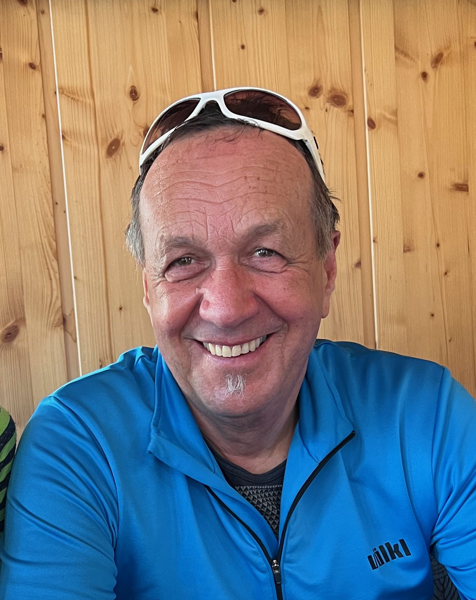

Die JO unterteilt sich in folgende Gruppen:
Ski Fungruppe: Teilnahme an den Trainings-, sowie am LinthCUP- und Clubrennen
Ski Funracegruppe: Teilnahme an den Trainings, an allen LinthCUP- und Clubrennen
Ski Renngruppe: Teilnahme an den Trainings, Lizenz- oder Animationsrennen, inklusive LinthCUP- und Clubrennen,
Teilnahme am Trainingslager im Herbst und an den Trainingsweekends erwünscht
Snowboard: Für Kinder, die selbständig Snowboardfahren können und weiter an ihrer Fahrtechnik arbeiten möchten

Ansprechsperson:
Urs Kaufmann